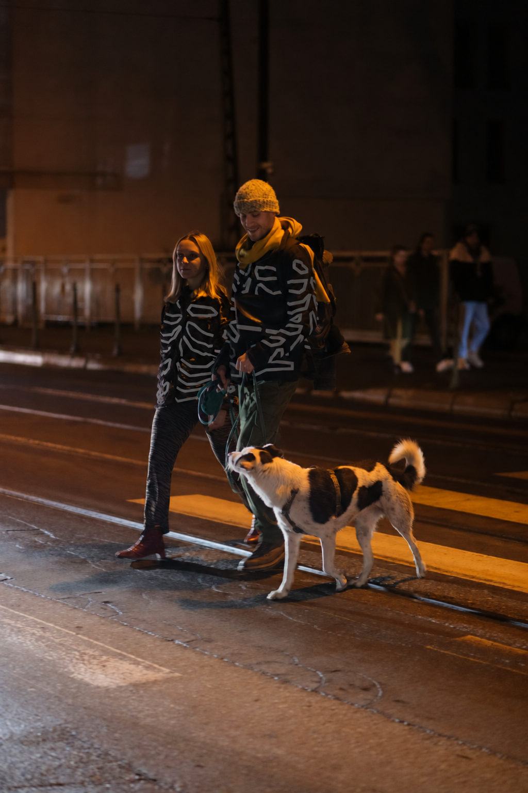

Reflective clothing by Biruta Korzeniowska
Design & imagery from Biruta Korzeniowska’s portfolio.


Still scene. Shifting light.
A glimpse of Blask after dark. Watch the light catch the pattern, and turn on sound for a ride through the rain.
Animated concept image. Simulated reflection.
